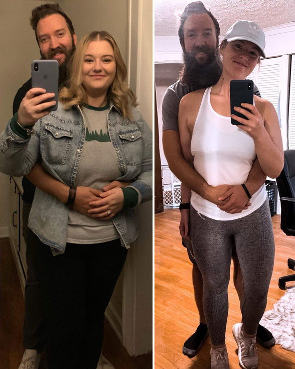
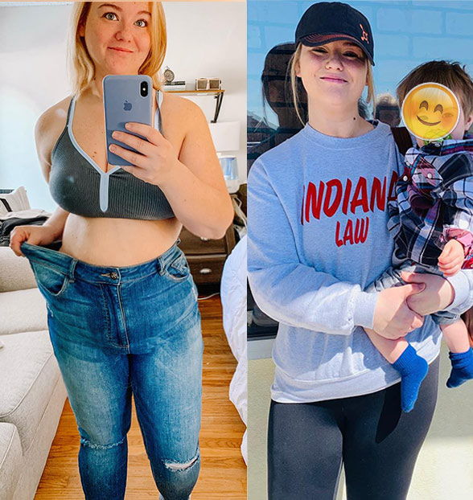
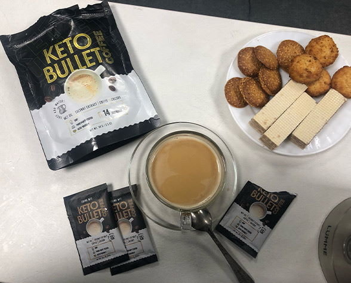
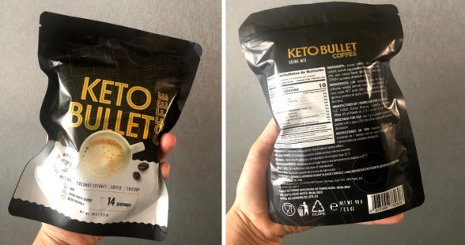

17 comments
My story How having children helped me lose weight and become a happy and confident woman

After giving birth at the age of 24 my body recovered on its own. My pre-pregnancy weight came back no problem. My thigh widened and rounded out and I was perfectly in shape. The same thing happened after my second pregnancy two years later. But the same miracle didn't happen after my third pregnancy at 32 years old.
I irresponsibly ate like usual hoping that my weight would go away on its own just like the other two times. That didn't do me any good. My youngest was 6 months old and my excess weight kept increasing (people even thought I was pregnant with a fourth). My youngest was always restless, he hardly gave me a break and needed to be held all the time. I was always busy with the kids and with my husband at work and stressed out. So that pushed me to eat sweet, breaded and salty foods repeatedly like in a cycle. I was a pig. My slightest movements caused me to break out in sweat and my heart to beat like mad.

I weighed 105 kg when I caught my spouse checking out girls walking by. I couldn't even blame him at that point, what could I expect from the man when even I hated looking at myself. I avoided looking at myself when walking by the mirror, not to mention how I avoided getting undressed in front of him... I hid in the children's room and slept in our youngest child's bed with candy.

The only thing that motivated me to see an expert was that my child could hardly walk at 14 months old.. a mother's nightmare. Bending over helping my son learn to walk was torture. My lower back clicked and clacked and it felt like burning metal inside. Sweat dripped down my face and onto my child.
I couldn't continue living like this so I asked my husband to take some time off work and take care of the kids while I went to a dietitian. There's not much to say about my first experience at the dietitian's, they put me on a protein diet that I could only maintain for 3 days. I was so exhausted and hungry that I could lose my temper over any little thing.

I went to one dietitian that had me try out a keto diet. The main idea of a keto diet is that the body is supposed to go into a fat-burning phase all the while eating only fatty and protein foods with hardly any carbs. Just so happens that's exactly what I love to eat so it wasn't too hard. It was all going well until the 5th day when something the dietitian called the, "keto flu", stopped me. The symptoms included fatigue, nausea, foggy brain and headaches that even the strongest painkillers couldn't relieve. And it was hard enough trying to get some rest with 3 children.
My dietitian recommended the additive Keto Bullet to speed up and make my keto diet easier. A coffee-like drink that I fell in love with. One cup of Keto Bullet gave me just as much energy as regular coffee every morning.
I can't say that I lost 28 kilograms immediately but I started feeling a lot better just after a couple days. As soon as I started taking this additive I noticed a change in my appetite. The cookie jar went untouched for the first time. I hardly opened the refridgerator in the evenings and I stopped eating at night. I slept deeper and woke up with more energy.
My belly got smaller every day. I had to put my belt on tighter and tighter instead of looser to my surprise. 2 weeks went by and I couldn't fit in my jeans anymore. I got happy every time I looked in the mirror and had a great mood. My husband flirted with me every chance he got and I didn't hold back anymore.
A month later and I had lost 17 kg. I didn't do anything to deserve it. Really. I just took Keto Bullet and ate like usual. Sometimes I even ate pastries and junk food so it's hard to say I was actually on a keto diet. But the serving size I wanted went way down. I felt so light and free and even better that how I felt after giving birth to my first child all without needing to feel hungry all the time. Household chores and taking care of the kids got easier. It was like I started a new life.
I started moving around more and taught my son to walk. I'm happy. I don't get strange looks from other mothers at the playground anymore.
The whole weight loss process took just 2 months. The dietitian said that Keto Bullet works that way. I would've had to wait 4‑5 months to achieve the same results without this additive. I only regret finding out about this drink so late and struggling with my weight without it.

I weight 77 kg now which is completely normal at my height of 175 cm. I look at myself in the mirror and see an attractive young woman again. I feel wanted and my eyes glow with happiness. My marriage is full of understanding, love and passion.

So, if you're overweight, don't give up! No matter what! If you're serious about weight loss, then try Keto Bullet . It helped me and it'll definitely help you.
 Go to the website and order
Comments:
julie222
Ah, I thought you had deleted your blog. I'm happy for you! Your posts bring me to tears
1111KatiePierce
Supergirl! You look better than ever!
kristen1234
I gain at least 5 kg every winter, this year 10. I need to lose weight soon otherwise I'll hide behind my pareo on the beach all summer.
olivia_19s
I heard about Keto Bullet ! Everyone says it's super awesome!
99scarlett99
Hey, everyone. What do you think, isn't it better to just do liposuction once and be done with it? I had it done last year and can't complain. It wasn't cheap, of course but it was worth it.
emily_166
It's hard to believe that you can lose so much weight in a month without serious diets or intense exercise but I'll give it a try.
momof4
Controlling your weight gets harder with age. I haven't had any luck in following eating restrictions. I can't resist sweets all the time! That's why I decided to try out Keto Bullet . It's convenient to drink at work and home. It kills my appetite every time. I can already see results, my weight is going down. 9 kg in a month and a half. I can even prove it with these pictures.
hazel.nutpie
Hi, I got my package today and I can already confirm that it kills hunger instantly! I didn't want to eat any more than just lunch and dinner yesterday and today. I slept better at night which is important for me because other supplements gave me insomnia.
OlivaOliva
I'm too lazy to work out and I love sweets far too much to go on a diet. I honestly thought that it would take me forever to get rid of my fatty belly. I even had to start buying clothes a size or two bigger.. but I managed to keep it a secret. Keto Bullet helped me fight off fat. Minus 14 kilos! And all in just 2 months! I couldn't recommend it more. Try it out!
Penelope
I used to put on fat really easily. Just a few candies or a danish pastry and my sides got saggy fat the next day. Then, I starved myself for a week to get back in shape. That's what used to happen before, now I hardly pay attention to what I eat. I drink Keto Bullet and weigh a steady 56 kg without a care in the world.
FlowerOfLove:99scarlett99
Liposuction is a complicated and dangerous operation. It's also unreliable. One of my friends had it done 3 years ago and had to do it over and over again. The more you get rid of it, the more room it has to fill back in.
Lily
I got on their side and read the ingredients. Seeing the ingredients were all natural convinced me to try it out. Otherwise all the unnatural weight loss supplements on the market can be dangerous. I tried one weight loss pill that hurt my stomach once. I hope taking Keto Bullet won't have any side effects.
Nancy
One of my coworkers drinks that drink. She's really slimmed down lately. Everyone in the office is impressed. Everyone's been drinking it and losing weight. I'm thinking about order some for myself.
HannahMoon_999
Keto Bullet It really works. I found out about it half a year ago. I don't have any problems with my weight now. Before I weighed a whopping 79 kg! I took everyone's advice and don't regret it. Anyone who's tired of being overweight or just wants to lose a few kilos should give it a try because there's nothing better available anywhere. It made me feel healthy, didn't do anything to my hormones, stomach or intestines unlike other supplements. I can't complain.
AriaKleingirlygirl
Thanks for the recommendation. I've already tried everything out there and haven't had any success. I hope it really works.
Ellie Grace
I can't find it in a pharmacy anywhere. I guess our city just doesn't get it.
Elaina
Of course not. It's written that they only sell it from their offical website. Even if you find something like it at the pharmacy, it'll be a knock-off verison of it. I got my coffee and started drinking it recently. I lost 3 kg in the first week. Couldn't be more psyched!